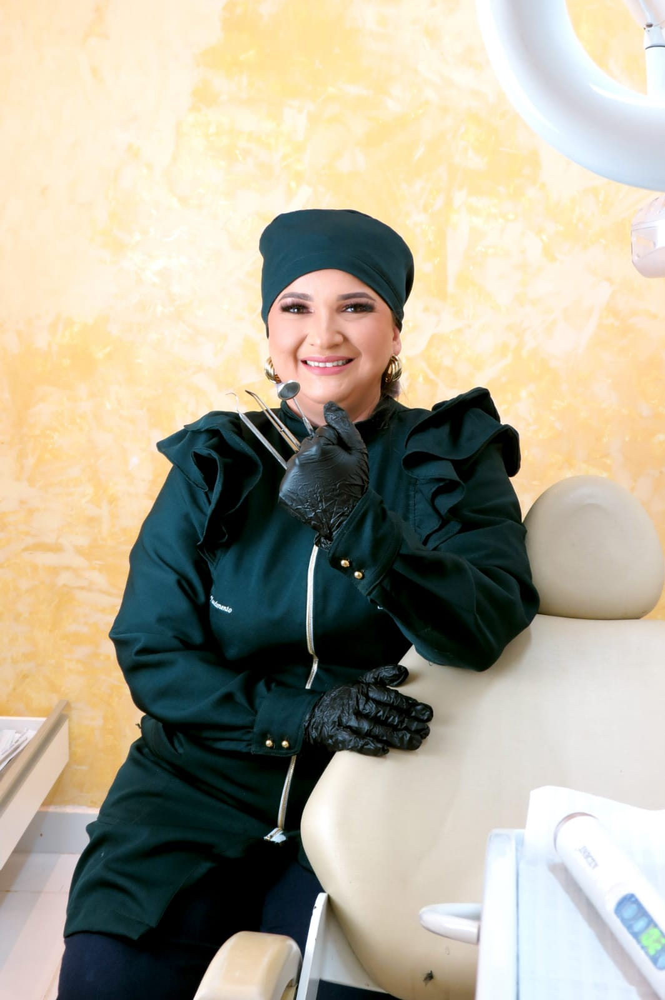

Dra. Rani Nascimento
Dentista dasua família.
Cuidado próximo. Odontologia para toda a família.

Amarante, São Gonçalo do Amarante — RN

Consulta com a Dra. Rani
O que você
precisa resolver?
Escolha um assunto para conhecer o atendimento ou fale diretamente com a clínica.
Falar com a clínicaComo chegar
Estamos no
Amarante.
Av. Benedito Santana
Amarante, São Gonçalo do Amarante — RNCEP 59296-515
Coordenadas informadas pela clínica. Use o mapa para conferir o ponto de chegada.
Calcule a distância e veja o trajeto.
Autorize a localização para desenhar a rota e calcular a distância.
Ver rota de carro no Google MapsPerguntas frequentes
Antes da consulta,
algumas respostas.
Se preferir, você pode conversar diretamente com a nossa equipe.
Falar no WhatsAppComo agendo minha consulta?
Fale com a clínica pelo WhatsApp para contar o que precisa. Nossa equipe orienta sobre os horários disponíveis e confirma seu agendamento.
Preciso ativar minha localização para ver a rota?
Não para consultar o endereço ou abrir a rota no Google Maps. A permissão é pedida apenas quando você escolhe calcular a distância e traçar o percurso neste mapa.
A distância considera o trajeto de carro?
Sim. Ao autorizar sua localização, calculamos a distância e o tempo estimado de um percurso de carro. O resultado pode variar conforme a localização recebida e as condições do trajeto.
Posso tirar dúvidas antes de agendar?
Sim. Fale com a clínica pelo WhatsApp para perguntar sobre horários, atendimento e sua consulta. A indicação de tratamento depende de uma avaliação odontológica.